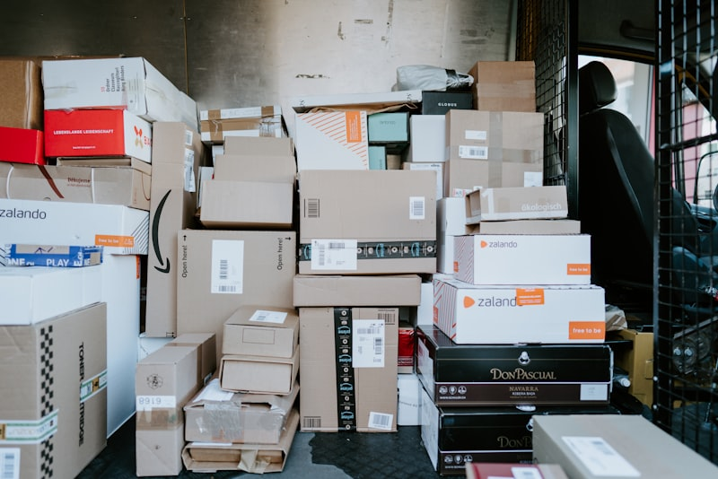

5つの事業領域
豊富な実績と確かな技術力で、あらゆるニーズにワンストップでお応えします。

【映像・音響・表示系】
- ・ 映像・音響設備
- ・ 放送設備
- ・ 大型映像・表示装置
- ・ 投映スクリーン設備（固定式・電動式）

【安全・防災・監視系】
- ・ 防犯カメラシステム
- ・ 防災設備・防災システム・防災備蓄物品

【教育・ICT・ネットワーク系】
- ・ 教育ICT設備・デジタル教材
- ・ ネットワーク基盤の設計・構築
- ・ 情報セキュリティ対策全般

【設備更新・保守系】
- ・ 照明設備のLED化工事
- ・ システム保守・維持管理

【調達・レンタル・特注系】
- ・ オフィス家具・事務用品の調達
- ・ 生活設備機器の調達・納品
- ・ 端末レンタル・キッティング・運用支援
- ・ 特注機器の設計・製作（用途別対応）
各種点検サービス

プロジェクトのご相談はこちらから
システム導入や保守に関するご質問、お見積りなどお気軽にお問い合わせください。
✉ メールでお問い合わせ